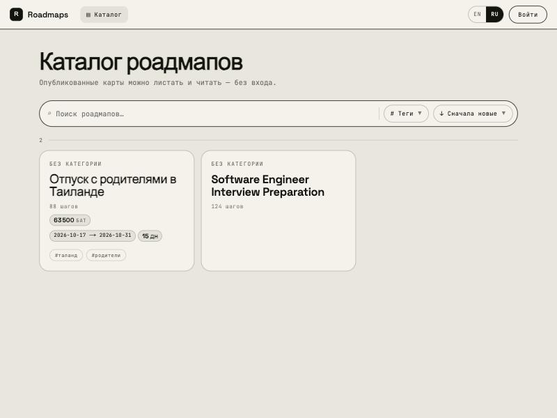
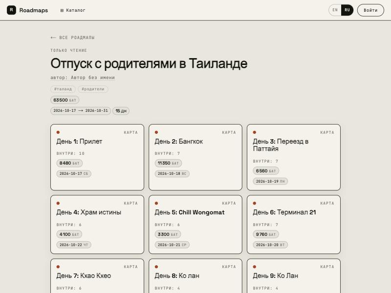
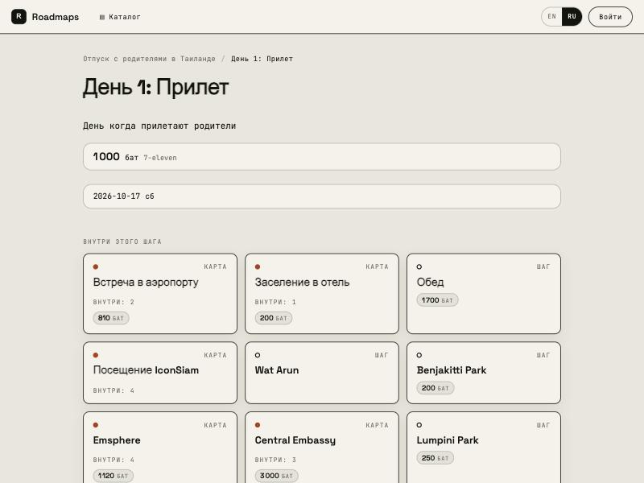

Локальные координаты вместо бесконечного полотна
Глубина - это провал внутрь узла, а не зум, поэтому любой запрос ограничен одной плоскостью: ни тайлов, ни quadtree, ни LOD не понадобилось.
Пет-проект
Соло - full stack
Конструктор роадмапов. Пользователь строит карту по теме - «Python Programmer», «Отпуск в Таиланде», - проваливается внутрь любого шага и строит под-роадмап на любую глубину. Карту можно опубликовать в каталог и читать без регистрации.
Ключевое отличие от майндмэпа - глубина, а не размер полотна. Нет одного бесконечного холста: каждый узел - своя плоскость с локальными координатами.



Глубина - это провал внутрь узла, а не зум, поэтому любой запрос ограничен одной плоскостью: ни тайлов, ни quadtree, ни LOD не понадобилось.
PixiJS на WebGL рисует сетку и связи, карточки живут в DOM-слое поверх: текст чёткий, ввод штатный, тяжёлая графика на GPU.
Видимость - свойство карты, а не узла: публичный запрос проверяет её один раз, и узлы приватной карты недостижимы структурно, а не отфильтрованы.
Бюджеты и периоды суммируются по поддереву рекурсивным CTE на каждое чтение, поэтому правка листа не может оставить устаревшую цифру у предка.
Отрезки не складываются как количества, поэтому у родителя отдельно календарное окно и отдельно суммарное усилие - информация в расхождении между ними.
Приведение '2026-02-31' к date не нормализуется, а бросает исключение, поэтому каст идёт под pg_input_is_valid внутри CASE: одна строка не роняет плоскость в 500.
Состав группы определяется геометрически, одним правилом с серверным рендером, поэтому удаление рамки не трогает карточки, а иерархия остаётся одна.
ID генерируются на клиенте, записи идут через коалесцирующую очередь: карточка появляется до ответа сервера, перетаскивание схлопывается в один PATCH.
SEO - единственный канал роста: отсюда SSR публичных страниц, плоский домен без wildcard-сертификата и slug с homoglyph-нормализацией.